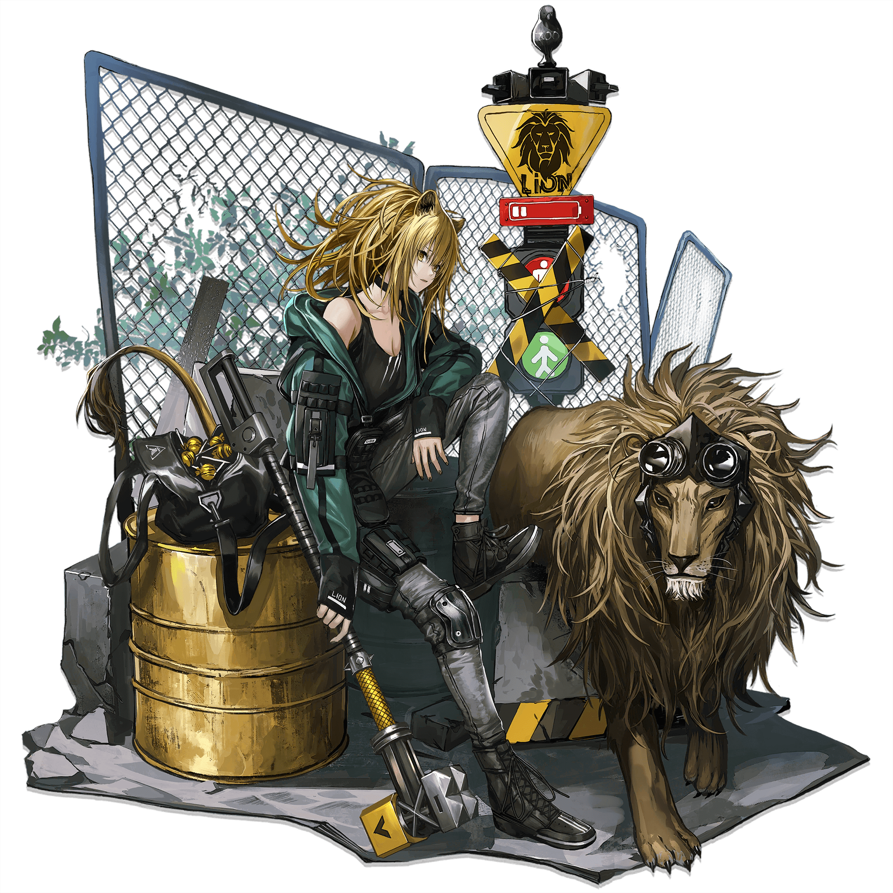

Vanguard


Vanguards have relatively low DP cost which often makes them among the first units to be deployed in an operation and the ability to generate more DP to allow the rest of the squad to be deployed. They typically have decent, well-rounded stats, allowing Vanguards to handle the initial waves of enemies in an operation.